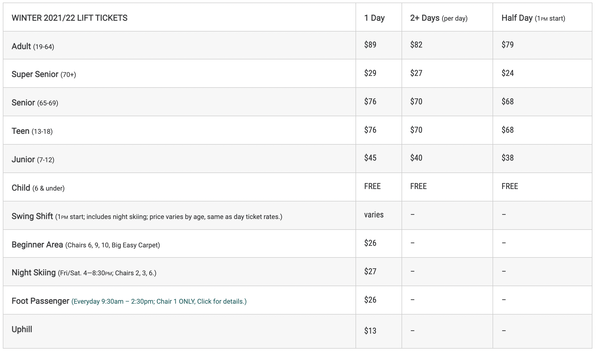

My personal favorite because I grew up on the mountain is Whitefish Mountain Resort. Dozens of olympic athletes have come from this mountain to go on to achieve brilliant things such as some of the skiiers within the video below. It is also known as one of the most superior ski towns in North America while it maintains a small town style of comfort with a very family oriented vibe. There is also plenty of night life for the older folks that is usually highlighted by live music at many taverns. As you can tell, there is something for everyone there. With 10 chairlifts and 111 marked trails, you surely won't get bored.
The location of Whitefish Mountain Resort is one that is pretty unheard of across the rest of the nation. It is located a short 15 to 20 minute drive from all around town and only about an hour from the Canadian border which provides for other traveling opportunities. Located about 45 minutes to the east is Glacier National Park, one of the most beautiful parks in the world that provide for insane panoramic views with Whitefish Lake and the town very visible from other vantage points. The mountain also has a picturesque village with a market and four or five different restaurants for different eatery options.
You can buy multiple lift tickets in advance online and get up to 1/4 OFF window rates. Tickets can be picked up online until 2 days before the start date. Prices subject to change.All of the multiple day tickets include a single day forgiveness time frame beginning with the pre-selected start date. Night Skiing is not included.Tickets for Children, ages 6 and under, are free but are still needed to get on lifts.Swing Shift Tickets are not available on Multi-Day Tickets.